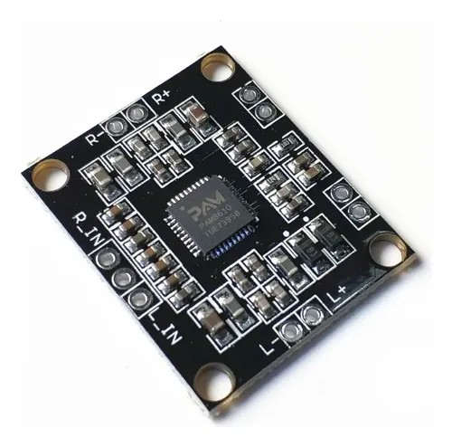

Amplificador de Audio
Este proyecto consiste en un amplificador de audio diseñado para mejorar la calidad y el volumen del sonido en dispositivos electrónicos. Utiliza componentes básicos de electrónica y es ideal para quienes desean aprender sobre circuitos de amplificación y experimentar con audio de manera práctica.
Galería del Proyecto

Este amplificador de audio es un proyecto ideal para quienes desean aprender sobre electrónica y audio.
Materiales Utilizados

Regulador de voltaje 12V a 5V: Se utilizó para adaptar la tensión de alimentación al módulo MP3.

Módulo MP3 5v: Integra radio FM, Bluetooth, ranura para tarjeta SD y puerto USB.

Módulo HW-009: Amplificador de audio estéreo de 2 canales Clase D, con 15W por canal.